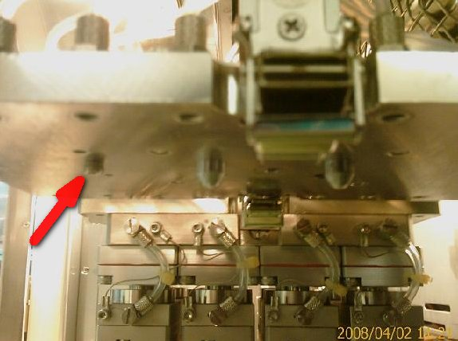
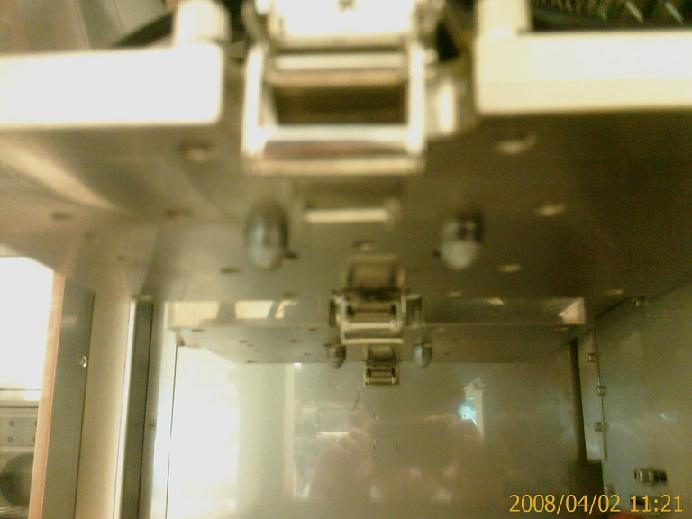
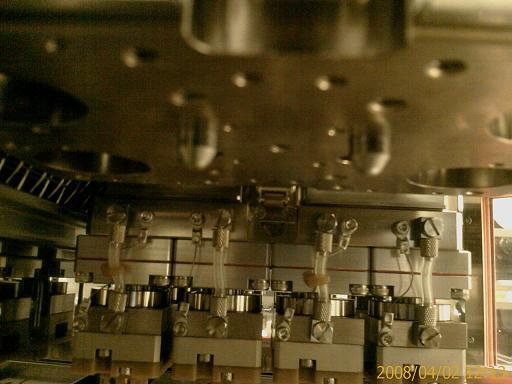

Service History
Subject: NS-7080/NS-8080 Index Arm Guide Pin
Handler Model: NS-7080 (StatsChippac)
Controller: RC520
Date: 3 Apr 2008
Symptom
Recently, the NS7080 handlers and NS8080 have different with the previous NS7000 at the Index Arm.
It was found that there was no guide pins for recent NS-7080 & NS-8080 at the Index Arm therefore Index Arm 1 Layout kit (SLK) to be fitted on the Index Arm 2.
That will cause no vacuum situation when running Quad site during production.
|
 NS-7000 Index Arm (M3 bolt as guide pin) |
 Recent NS-7080 |
 Recent NS-8080 |
Action
Cause